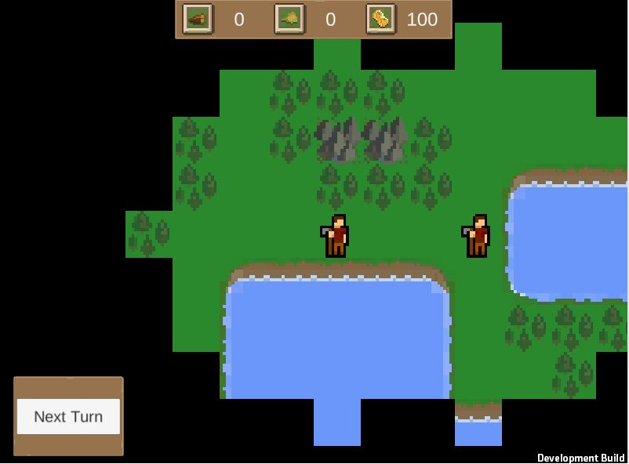
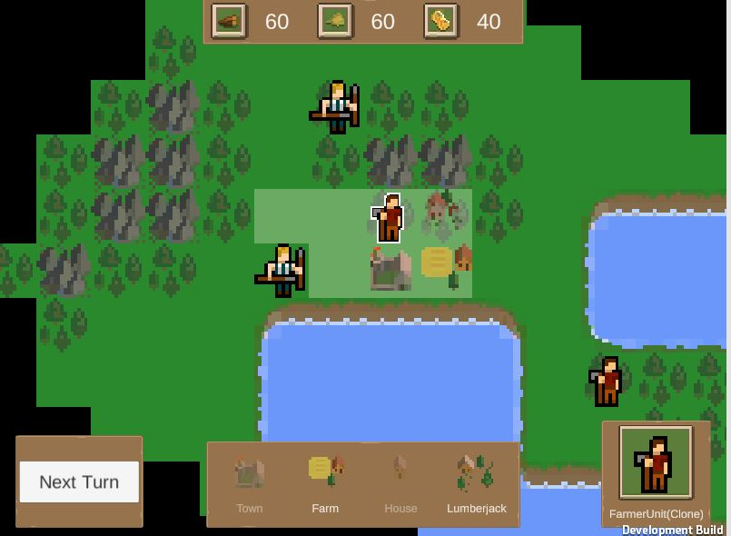

Games
2D turn-based game

What I learned
- How to Organize a strategy game with a selection manager system
- How to make a selection system using raycasting
- How to use unity tilemap to create 2D maps
- How to create a BFS algorithm for pathfinding

Type: Learning Project
Engine: Unity
Language: C#
Key Features:Turn based movement system, Building system, Enemy AI, Fog of war, economy and resources system
About
This is one of the first, if not THE first course/game I took/created when first learning Unity. So it was a great learning experience and I learnt many of the fundamentals of not just making 2D turn based game, but also the basics of C#, Unity, and game development in general.
The reason for picking this as one of my first game prototypes to make, is that it has a lot of similarities to what would be my first own game in Rogue Conflict, mainly in that it is a 2D turn based game, and a lot of the systems in this game are very similar to the ones I would use in RC.